Race Data Analysis
Lateral acceleration, speed and corner radius from ARG26's autocross and endurance runs at competition.
Autocross
This is competition data from ARG26's autocross run (49.6 s). The lateral acceleration and speed maps come from the car's GPS, and the corner radius map comes from our quasi-steady-state (QSS) lap model of the same track.
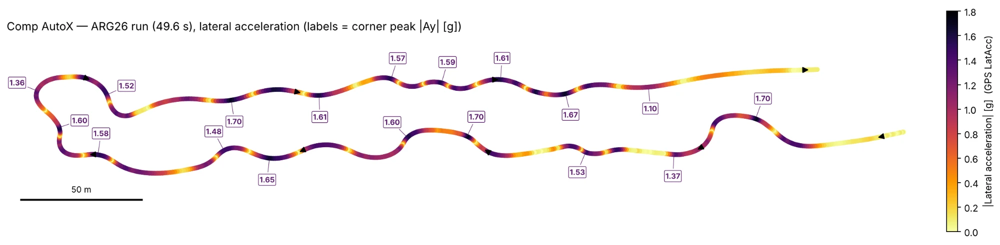
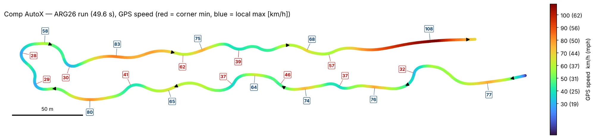
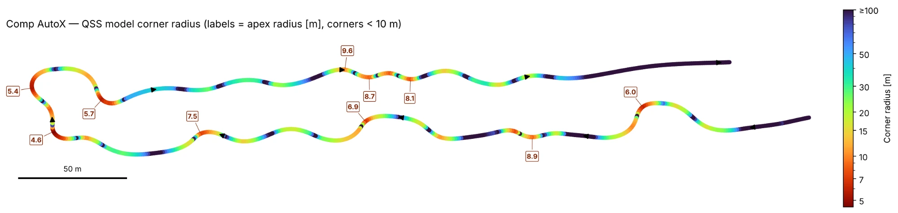
Endurance
This is competition data from ARG26's fastest endurance lap (63.10 s). The other laps are shown in grey behind it. As with autocross, the corner radius map comes from the QSS lap model.
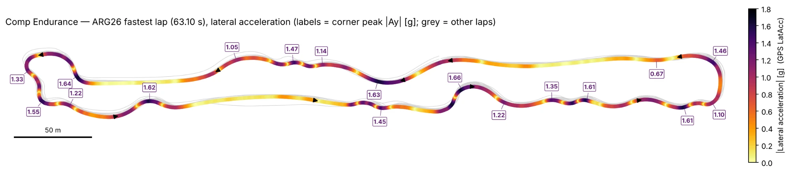
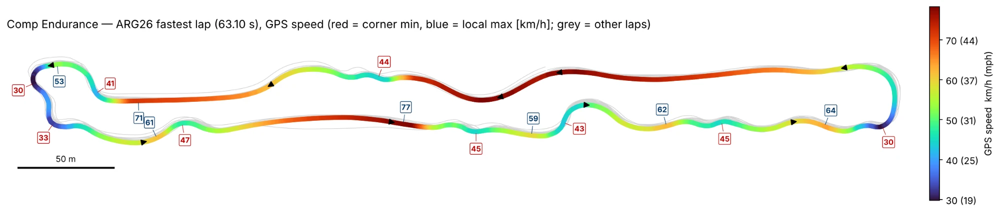
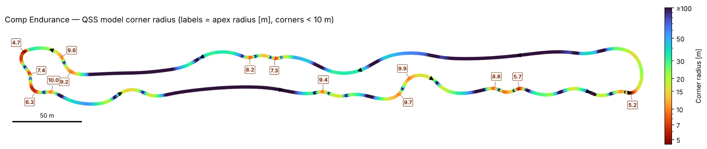
Load Cases
ARG26 and ARG27 load cases from IMU data, with a year over year comparison.
Data
The load cases were determined by our unsprung lead, Parker, from IMU data on the car, post processed to the CG. All values are in g. The combined cases apply the listed acceleration both laterally and longitudinally. Bump is vertical only.
| Load case | ARG26 (g) | ARG27 (g) | Change (g) |
|---|---|---|---|
| Cornering | 2.3 | 2.4 | +0.1 |
| Accel | 1.5 | 1.6 | +0.1 |
| Braking | 1.9 | 1.9 | 0.0 |
| Combined accel + cornering | 1.24 | 1.35 | +0.11 |
| Combined braking + cornering | 1.47 | 1.5 | +0.03 |
| Bump | 3.5 | 3.5 | 0.0 |
ARG27 is slightly higher in cornering and accel, and similar in braking.
Tires
Lateral force plots from TTC tire data, comparing Hoosier tire candidates.
1Data
All plots on this page use run B2356run8.mat from the TTC (Tire Test Consortium) Round 9 data, in the MATLAB format with USCS (US customary) units.
To doRerun the tire data in OptimumTire, and run it at different tire pressures. There is good work on both from previous years to start from.
2Plots
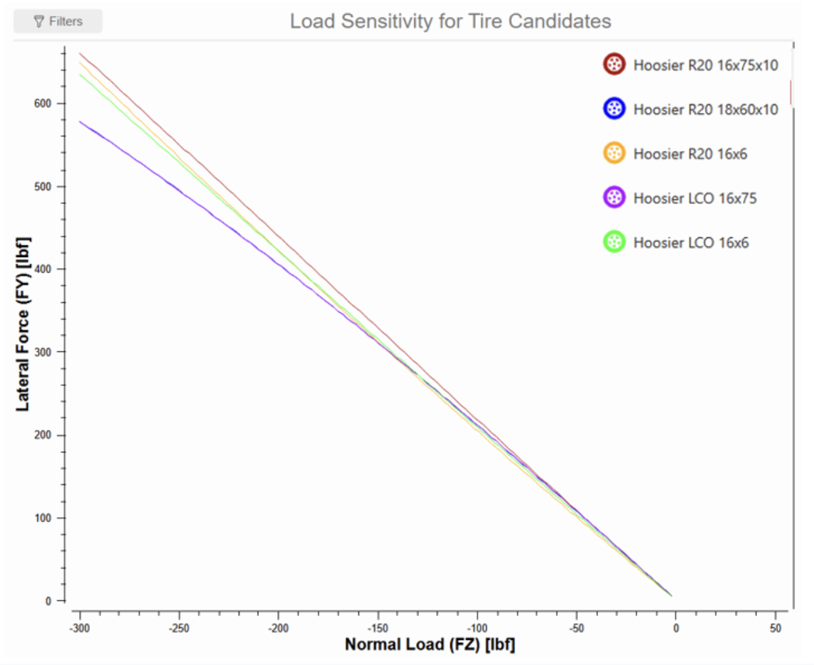
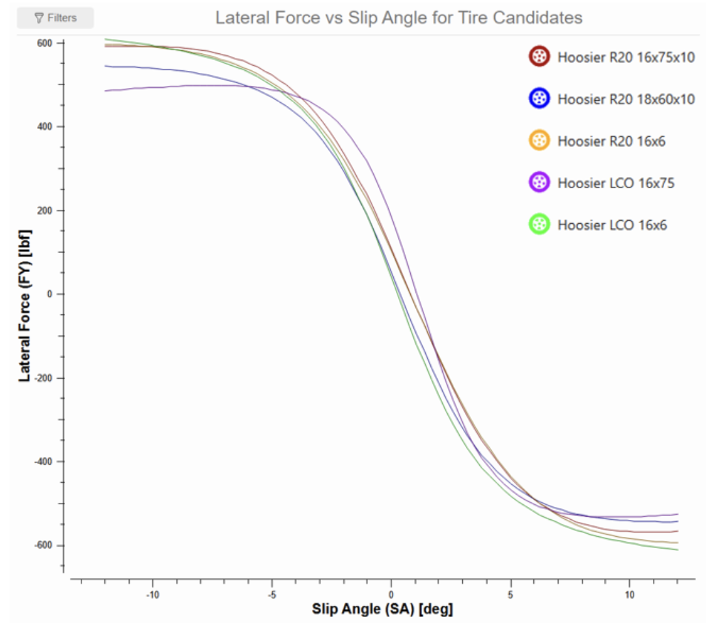
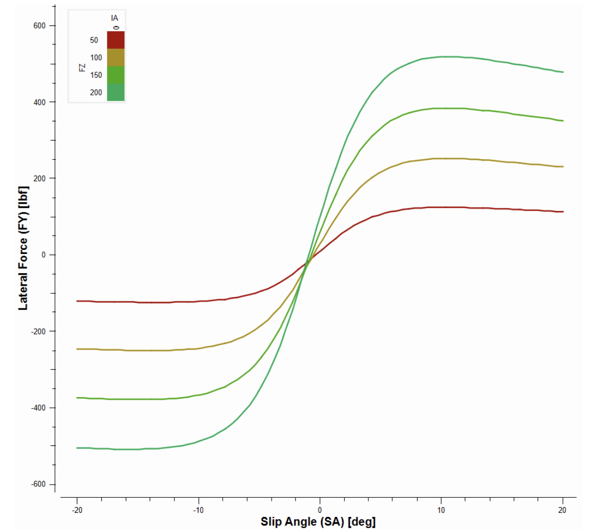
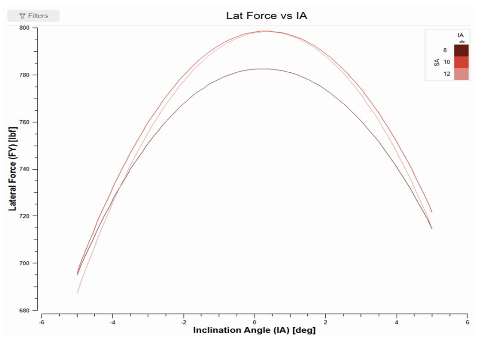
CFD Data
Downforce and drag from a CFD speed sweep at 0° yaw, roll and pitch.
Data
This is CFD data from a speed sweep of the car from 10 to 20 m/s, with the car at 0° yaw, 0° roll and 0° pitch.
| Speed (m/s) | Downforce (N) | Drag (N) | L/D | Front downforce (N) | Rear downforce (N) | Front balance (%) | CLA (m²) | CDA (m²) |
|---|---|---|---|---|---|---|---|---|
| 10 | 227.38 | 87.43 | 2.601 | 102.72 | 124.66 | 45.18 | 3.7123 | 1.4275 |
| 11 | 277.38 | 109.20 | 2.540 | 124.45 | 152.92 | 44.87 | 3.7426 | 1.4734 |
| 12 | 331.18 | 130.38 | 2.540 | 148.59 | 182.59 | 44.87 | 3.7549 | 1.4782 |
| 13 | 386.08 | 152.51 | 2.531 | 176.81 | 209.27 | 45.80 | 3.7298 | 1.4734 |
| 14 | 450.97 | 181.37 | 2.486 | 201.72 | 249.26 | 44.73 | 3.7565 | 1.5108 |
| 15 | 521.71 | 203.84 | 2.559 | 240.16 | 281.55 | 46.03 | 3.7856 | 1.4791 |
| 16 | 594.91 | 235.67 | 2.524 | 269.78 | 325.13 | 45.35 | 3.7941 | 1.5030 |
| 17 | 675.56 | 264.17 | 2.557 | 309.17 | 366.38 | 45.77 | 3.8164 | 1.4924 |
| 18 | 756.41 | 292.93 | 2.582 | 348.70 | 407.71 | 46.10 | 3.8116 | 1.4761 |
| 19 | 855.14 | 337.50 | 2.534 | 382.61 | 472.53 | 44.74 | 3.8675 | 1.5264 |
| 20 | 956.77 | 379.60 | 2.520 | 422.13 | 534.64 | 44.12 | 3.9052 | 1.5494 |
Plots
Downforce and drag both grow with the square of speed. Downforce goes from 227 N at 10 m/s to 957 N at 20 m/s, and drag goes from 87 N to 380 N.
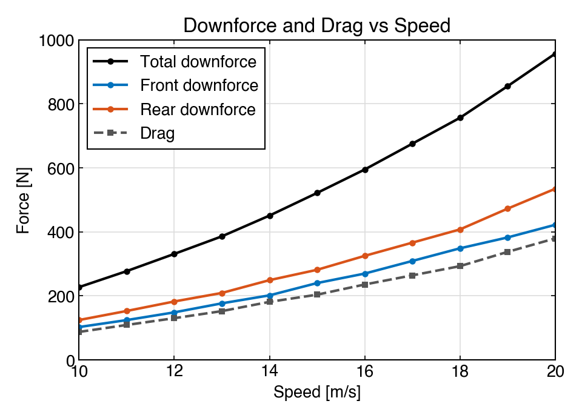
Because the forces grow with speed squared, CLA and CDA stay almost constant across the sweep, at 3.71 to 3.91 m² and 1.43 to 1.55 m². The lift to drag ratio stays between 2.49 and 2.60 and the front balance stays between 44% and 46%.
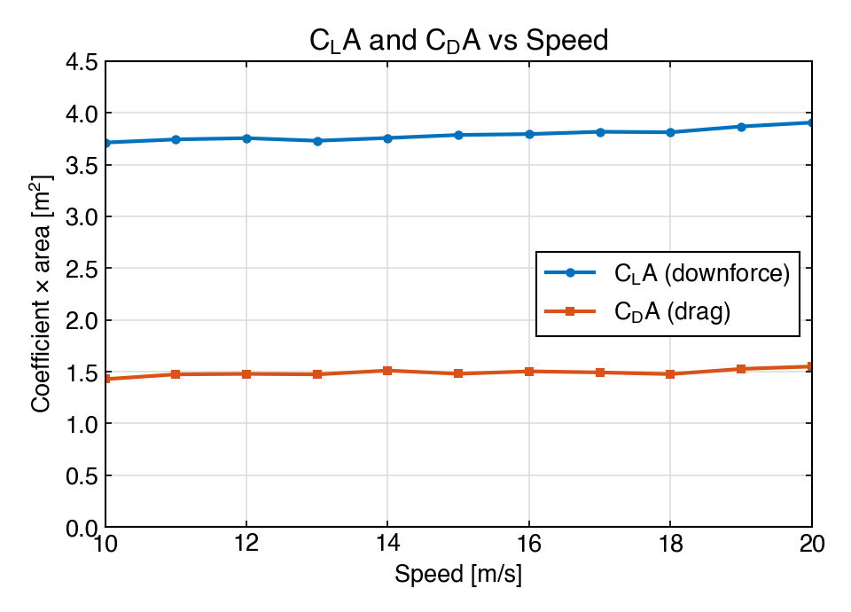